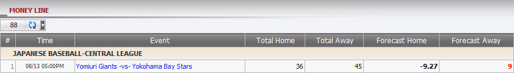

Money Line
Definition:
Show master’s win/loss based on position taking for tickets which have bet type: MoneyLine.

figure 1.1
Term definition
- Total Home: Total master's earning amount from member stake based on PT if Home team is selected to place bets.
- Total Away: Total master's earning amount from member stake based on PT if Away team is selected to place bets.
- Forecast Home: The amount that master might lose if members win the bet with their choice (Home team).
- Forecast Away: The amount that master might lose if members win the bet with their choice (Away team).
In the figure above, we have the following bet details:
- 1st bet: stake = 120, odds = 0.43, choice = Home team (Yomiuri Giants), master PT = 30%
--> Total home = stake * master PT * 1 = 120 * 30% * 1 = 36
--> Total away = 0
--> Forecast home = stake * master PT * odds = 120 * 30% * 0.43 = 15.48
--> Forecast away = -stake * master PT = -120 * 30% = -36
- 2nd bet: stake = 150, odds = -0.55, choice = Away team (Yokohama Bay Stars), master PT = 30%
--> Total home = 0
--> Total away = stake * master PT * 1 = 150 * 30% * 1 = 45
--> Forecast home = stake * master PT * odds = 150 * 30% * (-0.55) = -24.75
--> Forecast away = stake * master PT * 1 = 150 * 30% * 1 = 45
According to 2 bets above, we have last result as below:
--> Total home = 36 + 0 = 36
--> Total away = 0 + 45 = 45
--> Forecast home = 15.48 - 24.75 = -9.27
--> Forecast away = -36 + 45 = 9
Note:
- Total Home
- If member placed Home team then:
+ If absolute value of Odds < 1 then: Total Home = stake * Master PT * 1.
+ If absolute value of Odds >= 1 then: Total Home = stake * Master PT * |odds|.
- If member placed Away team then: Total Home = 0.
- Total Away
- If member placed Home team then: Total Away = 0.
- If member placed Away team then:
+ If absolute value of Odds < 1 then: Total Away = stake * Master PT * 1.
+ If absolute value of Odds >= 1 then: Total Away = stake * Master PT * |odds|.
- Forecast Home
- If Odds < 0
+ If member placed Home team then: Forecast Home = stake * Master PT * 1.
+ If member placed Away team then: Forecast Home = stake * Master PT * odds.
- If Odds > 0
+ If member placed Home team then: Forecast Home = stake * Master PT * odds.
+ If member placed Away team then: Forecast Home = -stake * Master PT.
- Forecast Away
- If Odds < 0
+ If member placed Home team then: Forecast Away = stake * Master PT * odds.
+ If member placed Away team then: Forecast Away = stake * Master PT * 1.
- If Odds > 0
+ If member placed Home team then: Forecast Away = -stake * Master PT.
+ If member placed Away team then: Forecast Away = stake * Master PT * odds.